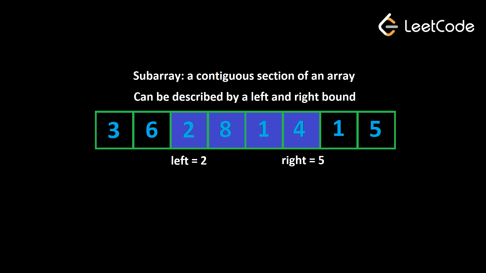
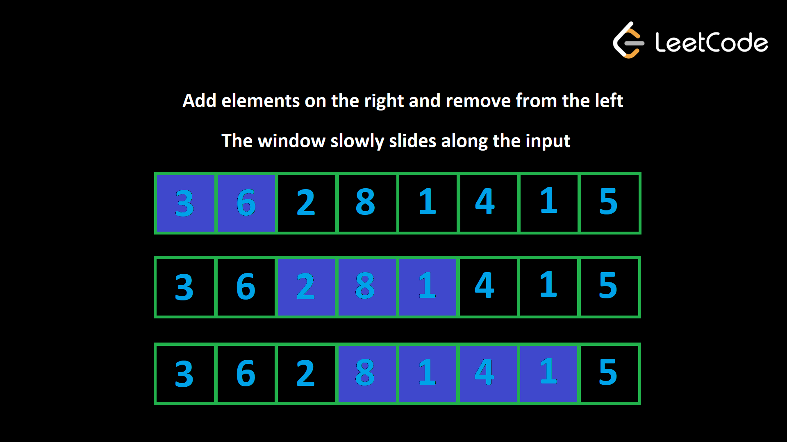

Как и два указателя, скользящие окна работают одинаково с массивами и строками — важно то, что они являются итерируемыми с упорядоченными элементами. Для краткости первая часть этой статьи вплоть до примеров будет посвящена массивам. Однако вся логика для строк идентична.
Скользящее окно — еще один распространенный подход к решению проблем, связанных с массивами. Скользящее окно фактически реализовано с помощью двух указателей! Прежде чем мы начнем, нам нужно поговорить о концепции подмассива.
Дан массив, подмассив представляет собой непрерывную часть массива. Все элементы должны быть соседними друг с другом в исходном массиве и в исходном порядке. Например, в массиве [1, 2, 3, 4] подмассивы (сгруппированные по длине):
Подмассив может быть определен двумя индексами: началом и концом. Например, для [1, 2, 3, 4] подмассив [2, 3] имеет начальный индекс 1 и конечный индекс 2. Назовем начальный индекс левой границей, а конечный индекс правой границей. Другое название подмассива в этом контексте — «окно».

Существует очень распространенная группа проблем, связанных с подмассивами, которые можно эффективно решить с помощью скользящего окна. Давайте поговорим о том, как выявить эти проблемы.
Во-первых, задача будет явно или неявно определять критерии, которые делают подмассив «действительным». Есть два компонента, которые определяют, что делает подмассив действительным:
1. Метрика ограничений. Это некоторый атрибут подмассива. Это может быть сумма, количество уникальных
элементов, частота определенного элемента или любой другой атрибут.
2. Числовое ограничение на метрику ограничения. Это то, какой должна быть метрика ограничения, чтобы
подмассив считался действительным.
Например, предположим, что задача объявляет подмассив допустимым, если его сумма меньше или равна 10. Метрикой ограничения здесь является сумма подмассива, а числовое ограничение <= 10. Подмассив считается допустимым, если его метрика ограничения соответствует числовому ограничению, т. е. сумма меньше или равна 10.
Во-вторых, задача попросит вас каким-то образом найти допустимые подмассивы.
1. Самая распространенная задача, с которой вы столкнетесь, — это поиск наилучшего допустимого подмассива. Проблема определит, что делает один подмассив лучше другого. Например, задача может потребовать от вас найти самый длинный допустимый подмассив. 2. Другая распространенная задача — найти количество допустимых подмассивов. Мы рассмотрим это далее в статье.
Всякий раз, когда в описании проблемы говорится о подмассивах, вам следует выяснить, является ли скользящее окно хорошим вариантом, проанализировав описание проблемы.
Вот предварительный просмотр некоторых примеров проблем, которые мы рассмотрим в этой статье, чтобы помочь вам лучше понять, как выглядят проблемы со скользящим окном:
Идея скользящего окна состоит в том, чтобы учитывать только допустимые подмассивы. Напомним, что подмассив может быть определен левой границей (индекс первого элемента) и правой границей (индекс последнего элемента). В скользящем окне мы поддерживаем две переменные left и right, которые в любой момент времени представляют текущий рассматриваемый подмассив.
Изначально у нас left = right = 0, что означает, что первый подмассив, на который мы смотрим, является просто первым элементом массива. Мы хотим расширить размер нашего «окна», и мы делаем это, увеличивая его right. Когда мы увеличиваем right, это похоже на «добавление» нового элемента в наше окно.
Но что, если после добавления нового элемента подмассив станет недействительным? Нам нужно «удалить» некоторые элементы из нашего окна, пока оно снова не станет действительным. Чтобы «удалить» элементы, мы можем увеличить значение left, что сожмет наше окно.
Добавляя и удаляя элементы, мы «сдвигаем» наше окно вдоль ввода слева направо. Размер окна постоянно меняется: оно увеличивается до тех пор, пока не станет недействительным, а затем сжимается. Однако он всегда скользит вправо, пока мы не достигнем конца ввода.

Чтобы объяснить, почему этот алгоритм работает, давайте рассмотрим конкретный пример. Допустим, нам дан массив положительных целых чисел nums и целое число k. Нам нужно найти длину самого длинного подмассива, сумма которого меньше или равна k. В этом примере пусть nums = [3, 2, 1, 3, 1, 1] и k = 5.
Изначально у нас left = right = 0, поэтому наше окно — это только первый элемент: [3]. Теперь давайте расширимся вправо, пока ограничение не будет нарушено. Это произойдет, когда left = 0, right = 2 и наше окно: [3, 2, 1]. Сумма здесь равна 6, что больше k. Теперь мы должны сжимать окно слева до тех пор, пока ограничение больше не будет нарушено. После удаления одного элемента окно снова становится действительным: [2, 1].
Почему правильно убрать эту 3 и забыть о ней до конца алгоритма? Поскольку входные данные содержат только положительные целые числа, более длинный подмассив напрямую равен большей сумме. Мы знаем, что [3, 2, 1] уже дает слишком большую сумму. У нас не будет возможности снова получить допустимое окно, если мы сохраним это число 3, потому что если бы мы добавили еще элементы справа, сумма только увеличилась бы. Вот почему мы можем забыть о 3 до конца алгоритма.
Теперь, когда у вас есть представление о том, как работает скользящее окно, давайте поговорим о том, как его реализовать. В этом разделе мы будем использовать предыдущий пример (найти самый длинный подмассив с суммой, меньшей или равной k).
Как описано выше, нам необходимо определить метрику ограничения. В нашем примере метрикой ограничения является сумма окна. Как нам отслеживать сумму окна при добавлении и удалении элементов? Один из способов сделать это — сохранить окно в отдельном массиве. Когда мы добавляем элементы справа, мы добавляем их в наш массив. Когда мы удаляем элементы слева, мы удаляем соответствующие элементы из массива. Таким образом, мы всегда можем найти сумму нашего текущего окна, просто суммируя элементы в отдельном массиве.
Это очень неэффективно, так как удаление элементов и нахождение суммы окна будет O(n) операций. Как мы можем добиться большего?
На самом деле нам не нужно хранить окно в отдельном массиве. Все, что нам нужно, это некоторая переменная, назовем ее curr, которая отслеживает текущую сумму. Когда мы добавляем новый элемент справа, мы просто выполняем curr += nums[right]. Когда мы удаляем элемент слева, мы просто выполняем curr -= nums[left]. Таким образом, все операции выполняются в О(1).
Далее, как нам перемещать указатели left и right? Помните, мы хотим продолжать расширять наше окно, а оно всегда сдвигается вправо — оно может просто несколько раз сжиматься между ними. Поскольку right всегда движется вперед, мы можем использовать цикл for для перебора входных данных. На каждой итерации цикла for мы будем добавлять элемент nums[right] в наше окно.
А что насчет left? Когда мы двигаемся влево, мы сжимаем наше окно. Мы сжимаем наше окно только тогда, когда оно становится недействительным. Поддерживая curr, мы можем легко определить, действительно ли текущее окно, проверив условие curr <= k. Когда мы добавляем новый элемент и окно становится недействительным, нам может потребоваться удалить несколько элементов слева. Например, скажем, nums = [1, 1, 1, 3] и k = 3. Когда мы достигаем цифры 3 и добавляем ее в окно, окно становится недействительным. Нам нужно удалить три элемента слева, прежде чем окно снова станет действительным.
Это говорит о том, что нам следует использовать цикл while для выполнения удаления. Условие будет while (curr > k) (пока окно недействительно). Чтобы выполнить удаление, мы выполняем curr -= nums[left] и затем увеличиваем значение left на каждой итерации цикла while.
Наконец, как нам обновить ответ? На каждой итерации цикла for после цикла while текущее окно является действительным. Мы можем написать здесь код, чтобы обновить ответ. Формула длины окна: right-left + 1.
Вот псевдокод, который объединяет все это:
left = 0
curr = 0
answer = 0
for (int right = 0; right < nums.length; right++):
curr += nums[right]
while (curr > k):
curr -= nums[left]
left++
answer = max(answer, right - left + 1)
return answer
Вот псевдокод для общего шаблона:
left = 0
for (int right = 0; right < arr.length; right++):
Do some logic to "add" element at arr[right] to window
while WINDOW_IS_INVALID:
Do some logic to "remove" element at arr[left] from window
left++
Do some logic to update the answer
Сколько подмассивов имеется в любом массиве? Если длина массива равна n, существует n подмассивов длины 1. Тогда существует n - 1 подмассивов длины 2 (каждый индекс, кроме последнего, может быть начальным индексом), n - 2 подмассива длины 3 и т. д. до тех пор, пока не останется только 1 подмассив длины n. Это означает, что существуют (n * (n + 1)) / 2 подмассивов (это частичная сумма этого ряда). С точки зрения временной сложности любой алгоритм, рассматривающий каждый подмассив, будет как минимум O(n2) что обычно происходит слишком медленно. Раздвижное окно гарантирует максимум 2n итераций окна - правый указатель может перемещаться n раз, и левый указатель может перемещаться n раз. Это означает, что если логика, выполненная для каждого окна, O(1), алгоритмы скользящего окна работают в O(n), что намного быстрее.
Вы можете подумать: внутри цикла for есть цикл while, разве это не временная сложность O(n2)? Причина, по которой это все еще заключается в том, что цикл while может выполнять всего n итераций для всего алгоритма (left начинается с 0, только увеличивается и никогда не превышает n). Если бы цикл while выполнялся n раз на одной итерации цикла for, это означало бы, что он вообще не будет выполняться на всех остальных итерациях цикла for. Это то, что мы называем амортизированным анализом, хотя худшим случаем для итерации внутри цикла for является O(n), в среднем оно составляет O(1), если учесть все время выполнения алгоритма.
Теперь давайте посмотрим на несколько примеров скользящих окон.
Пример 1. Дан массив целых положительных чисел nums и целое число k, найдите длину самого длинного подмассива, сумма которого меньше или равна k. Это проблема, о которой мы говорили выше. Теперь мы формально решим эту проблему.
Давайте использовать целочисленный curr, который отслеживает сумму текущего окна. Поскольку задаче нужны подмассивы, сумма которых меньше или равна k, мы хотим сохранить curr <= k. Давайте рассмотрим пример, где nums=[3, 1, 2, 7, 4, 2, 1, 1, 5] и k=8.
Сначала окно пустое, но мы можем увеличить его до [3, 1, 2], сохраняя ограничение. Однако после добавления 7 сумма окна становится слишком большой. Нам нужно сжимать окно до тех пор, пока сумма снова не станет ниже 8, чего не произойдет, пока наше окно не станет выглядеть как [7]. Когда мы пытаемся добавить следующий элемент, наше окно снова становится слишком большим, и нам нужно удалить 7, что означает, что у нас есть [4]. Теперь мы можем увеличивать окно до тех пор, пока оно не станет выглядеть как [4, 2, 1, 1], но добавление следующего элемента сделает сумму слишком большой. Мы удаляем элементы слева до тех пор, пока они снова не будут соответствовать ограничению, что происходит в точке [1, 1, 5]. Самый длинный подмассив, который мы нашли, был [4, 2, 1, 1], что означает, что ответ — 4.
Когда мы добавляем элемент в окно, перемещая правую границу, мы просто выполняем curr += value. Когда мы удаляем элемент из окна, перемещая левую границу, мы просто выполняем curr -= value. Нам следует удалять элементы, если curr > k.
Подведем итог тому, что каждая переменная делает в коде:
• left: крайний левый индекс нашего текущего окна.
• right: самый правый индекс нашего текущего окна.
• curr: сумма нашего текущего окна
• ans: длина самого длинного допустимого окна, которое мы когда-либо видели.
Перебирайте right через входные данные, чтобы добавить элементы в окно. Обновите curr, добавив к нему nums[right]. Когда окно становится недействительным (curr > k), удалите элементы из окна, вычитая nums[left] из curr. Затем увеличиваем left. Нам нужно делать это до тех пор, пока окно снова не станет действительным, поэтому мы используем цикл while.
Размер окна right — left + 1. Обновляем наш ответ только тогда, когда окно становится действительным.
Если у вас все еще возникают проблемы с пониманием алгоритма, просмотрите разделы этой статьи перед примером вместе с пошаговым видео.
# curr is the current sum of the window
left = curr = ans = 0
for right in range(len(nums)):
curr += nums[right]
while curr > k:
curr -= nums[left]
left += 1
ans = max(ans, right - left + 1)
return ans
Для подмассива, начинающегося left и заканчивающегося right, длина равна right - left + 1. Как упоминалось ранее, временная сложность этого алгоритма равна O(n), поскольку вся работа, выполняемая внутри цикла for, амортизируется О(1), где n — длина nums. Пространственная сложность постоянна, поскольку мы используем только 3 целочисленные переменные.
Пример 2. Вам дана двоичная строка s (строка, содержащая только «0» и
«1»). Вы можете выбрать до одного «0»
и изменить его на «1». Какова длина самой длинной подстроки, содержащей только
«1»?
Например, если задано s = «1101100111», ответ будет равен 5. Если вы выполните
переворот по индексу 2,
строка станет 1111100111.
Поскольку строка может содержать только «1» и «0», другой способ решить эту проблему: «Какова самая длинная подстрока, содержащая не более одного «0»?». Это облегчает нам решение с помощью скользящего окна, где наше условие — window.count("0") <= 1. Мы можем использовать целочисленный curr, который отслеживает, сколько "0" у нас в настоящее время есть в нашем окне.
Ввод может содержать только «1» или «0». Мы хотим найти максимальную последовательность «1». Поскольку любой элемент, который не является «1», является «0», эта проблема эквивалентна вопросу «Какова самая длинная подстрока, содержащая не более одного «0», поскольку мы могли бы просто перевернуть этот «0», и это гарантировано будет для всех остальных символом в подстроке будет «1».
Обратите внимание, что проблема запрашивает длину подстроки, а также определяет, что делает подстроку действительной. Метрика ограничения — это «сколько нулей в подстроке». Числовое ограничение равно <= 1. Следовательно, если мы используем целое число curr для отслеживания метрики ограничения, условием определения допустимости окна является curr <= 1.
Теперь мы можем использовать тот же процесс, что и в предыдущем примере. Перебираем элементы с указателем right. Если для каждого элемента s[right] равно «1», нам ничего делать не нужно. Если он равен «0», мы увеличиваем curr.
Всякий раз, когда окно становится недействительным (curr > 1), мы удаляем элементы слева. Если s[left] == «0», то мы можем уменьшить curr. Мы увеличиваем значение left, чтобы удалить элементы.
Опять же, размер окна равен right — left + 1. Мы обновляем наш ответ этим значением после цикла while, потому что окно гарантированно допустимо.
# curr is the current number of zeros in the window
left = curr = ans = 0
for right in range(len(s)):
if s[right] == "0":
curr += 1
while curr > 1:
if s[left] == "0":
curr -= 1
left += 1
ans = max(ans, right - left + 1)
return ans
Как и в предыдущем примере, эта проблема возникает в O(n) времени, где n — длина s, поскольку работа, выполняемая на каждой итерации цикла, амортизируется константой. Также используется только несколько целочисленных переменных, что означает, что этот алгоритм использует O(1) пространство.
Если задача требует указать количество подмассивов, соответствующих некоторому ограничению, мы все равно можем использовать скользящее окно, но нам нужно использовать изящный математический прием для расчета количества подмассивов.
Допустим, мы используем изученный нами алгоритм скользящего окна и в настоящее время у нас есть окно (left, right). Сколько действительных окон заканчиваются индексом right?
Это текущее окно (left, right), затем (left + 1, right), (left + 2, right) и так далее до (left, right) (только элемент right).
Вы можете зафиксировать правую границу, а затем выбрать для левой границы любое значение между left и right включительно. Следовательно, количество допустимых окон, заканчивающихся индексом right, равно размеру окна, который, как мы знаем, равен right — left + 1.
Пример 3: 713. Произведение подмассива
меньше K.
Учитывая массив положительных целых чисел nums и целое число k, верните количество
подмассивов, в которых
произведение всех элементов в подмассиве строго меньше k.
Например, учитывая входные nums = [10, 5, 2, 6], k = 100, ответ — 8. Подмассивы с
результатом произведения
меньше k:
[10], [5], [2], [6], [10, 5], [5, 2], [2, 6], [5, 2, 6]
Чтобы продемонстрировать только что изученное свойство, давайте рассмотрим пример в описании. Когда мы достигаем индекса 2, произведение становится слишком большим, поэтому нам нужно удалить самый левый элемент 10. Теперь окно допустимо, и его длина равна 2. Это означает, что есть 2 допустимых подмассива, которые заканчиваются здесь ([ 2] и [5, 2]).
Напомним, что в предыдущих примерах мы обновляли ответ (самую длинную длину) после цикла while, когда окно должно быть действительным. Здесь мы можем вместо этого добавить к нашему ответу текущий размер окна. Ограничение, определяющее допустимость окна, заключается в том, что произведение меньше k.
Кроме того, обратите внимание, что если k <= 1, у нас никогда не будет допустимых окон, поэтому мы можем просто немедленно вернуть 0.
Метрика ограничения: произведение окна. Числовое ограничение меньше k . Если мы используем целое число curr для представления текущего произведения окна, условием, которое делает окно недействительным, является curr> = k.
Добавьте элементы в окно с помощью curr *= nums[right]. Удалите их с помощью curr /= nums[left].
После цикла while мы знаем, что окно действительно. Добавьте к нашему ответу размер окна right — left + 1.
if k <= 1:
return 0
ans = left = 0
curr = 1
for right in range(len(nums)):
curr *= nums[right]
while curr >= k:
curr //= nums[left]
left += 1
ans += right - left + 1
return ans
Опять же, работа, выполняемая на каждой итерации цикла, амортизируется константой, поэтому время выполнения этого алгоритма равно O(n), где n - длина nums, а O(1) пространство.
В примерах, которые мы рассмотрели выше, размер нашего окна был динамическим. Мы пытались расширить его вправо настолько, насколько могли, сохраняя при этом окно в рамках некоторого ограничения, и удаляли элементы слева, когда ограничение нарушалось. Иногда в задаче указывается фиксированная длина k.
Эти проблемы просты, поскольку разница между любыми двумя соседними окнами составляет всего два элемента (мы добавляем один элемент справа и удаляем один элемент слева, чтобы сохранить длину).
Начните с построения первого окна (от индекса 0 до k-1). Если у нас есть окно размера k, то если мы добавим элемент с индексом i, нам нужно удалить элемент с индексом i - k. Например, k = 2, и в настоящее время у вас есть элементы с индексами [0, 1]. Теперь добавляем 2: [0, 1, 2]. Чтобы сохранить размер окна k = 2, нам нужно удалить 2 - k = 0: [1, 2].
Вот некоторый псевдокод:
curr = some data to track the window
// build the first window
for (int i = 0; i < k; i++)
Do something with curr or other variables to build first window
ans = answer variable, probably equal to curr here depending on the problem
for (int i = k; i < arr.length; i++)
Add arr[i] to window
Remove arr[i - k] from window
Update ans
return ans
Пример 4. Учитывая целочисленный массив nums и целое число k, найдите сумму подмассива с наибольшей суммой, длина которой равна k.
Как мы упоминали ранее, мы можем построить окно длины k, а затем перемещать его по массиву. Добавляйте и удаляйте по одному элементу за раз, чтобы окно оставалось размером k. Если мы добавляем значение в позиции i, нам нужно удалить значение в позиции i - k.
После того, как мы построим первое окно, мы инициализируем ваш ответ в curr, чтобы учесть сумму первого окна.
curr = 0
for i in range(k):
curr += nums[i]
ans = curr
for i in range(k, len(nums)):
curr += nums[i] - nums[i - k]
ans = max(ans, curr)
return ans
Сумма итераций цикла равна n, где n — длина nums, а работа, выполняемая на каждой итерации, постоянна, что дает этому алгоритму временную сложность, равную O(n), используя O(1) пространство.
Раздвижное окно является чрезвычайно распространенной и универсальной моделью. Здесь мы лишь коснулись поверхности, поскольку во многих задачах скользящих окон также потребуется использовать хеш-карту, о которой мы поговорим в главе о хешировании. Изучив хэш-карты, мы рассмотрим еще несколько проблем со скользящим окном. А пока проверьте свои знания, решая предстоящие практические задачи.